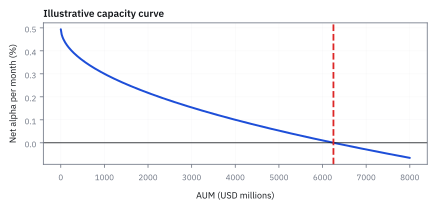
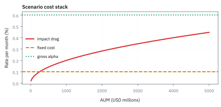
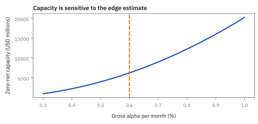

18.7 Strategy Capacity
กลยุทธ์ที่รับเงินมากขึ้นต้องส่งคำสั่งซื้อขายก้อนใหญ่ขึ้น คำสั่งก้อนใหญ่ดันราคาไปทางที่เราเสียเปรียบ ผลตอบแทนที่เหลือให้ผู้ลงทุนจึงหดลงตามขนาดเงิน หน้านี้หาว่ากลยุทธ์หนึ่งควรรับเงินได้มากที่สุดเท่าไร
กองทุนแห่งหนึ่งมีกลยุทธ์เทรดหุ้น คือชุดกฎที่บอกว่าจะซื้อหุ้นตัวไหนและขายตัวไหนเมื่อไร ทีมวิจัยลองใช้กฎนี้กับราคาในอดีต (เรียกว่า backtest) แล้วพบว่ากลยุทธ์ทำผลตอบแทนได้เกินตลาดเดือนละ 0.60% ส่วนที่เกินตลาดนี้เรียกว่า alpha
ทีมขายของกองทุนอยากรับเงินจากผู้ลงทุนให้มากที่สุด เพราะกองทุนเก็บค่าธรรมเนียมเป็นเปอร์เซ็นต์ของเงินที่ดูแล แต่ทุกครั้งที่ซื้อขายหุ้น กองทุนเสียต้นทุน และยิ่งเงินมาก คำสั่งซื้อขายยิ่งใหญ่ คำสั่งก้อนใหญ่ดันราคาไปทางที่เราเสียเปรียบ ตอนซื้อก็ดันราคาขึ้น ตอนขายก็กดราคาลง ต้นทุนส่วนนี้เรียกว่า market impact
ของที่รู้ (ตัวเลขสมมติทั้งหมด):
- เงินในกลยุทธ์ $A$ ดอลลาร์ เรียกว่า AUM (assets under management)
- alpha ก่อนหักต้นทุน $\alpha_g=0.60\%$ ต่อเดือน
- ต้นทุนคงที่ $c_0=0.10\%$ ต่อเดือน คือค่านายหน้ากับครึ่งหนึ่งของ spread (spread คือส่วนต่างระหว่างราคาที่มีคนพร้อมขายให้เรา กับราคาที่มีคนพร้อมซื้อจากเรา) ต้นทุนนี้ไม่ขึ้นกับขนาดเงิน
- ต้นทุน impact $0.02\%\times\sqrt{A/10^7}$ ต่อเดือน โดย $10^7$ คือ \$10 ล้าน ที่เงิน \$10 ล้าน impact คือ $0.02\%\times\sqrt1=0.02\%$ ถ้าเงินเพิ่มเป็นสี่เท่า impact เพิ่มเป็น $0.02\%\times\sqrt4=0.04\%$ (ตัวเลข 0.02% และรากที่สองมาจากไหน ขั้นที่ 6 และ 7 จะสร้างให้ดู)
ทีมขายคำนวณว่า alpha ที่เหลือหลังหักต้นทุนทั้งสองก้อนยังเป็นบวกจนเงินถึง \$6.25 พันล้าน (ขั้นที่ 2 จะคำนวณตัวเลขนี้ให้ดู) จึงเสนอว่า “รับเงินได้ถึง \$6.25 พันล้าน” ผู้ลงทุนควรเห็นด้วยไหม
ลองตอบก่อนเปิดเฉลย
ไม่ควร ที่ \$6.25 พันล้าน alpha ที่เหลือเป็นศูนย์พอดี ผู้ลงทุนทุกคนรวมกันได้กำไร $A\times0=\$0$ ทั้งที่ยังต้องแบกการแกว่งของราคาเต็มที่
กำไรรวมเป็นดอลลาร์สูงสุดเมื่อเงินเป็น 4/9 ของขนาดนั้น และที่ขนาดนั้น alpha ที่เหลือคือหนึ่งในสามของ $0.60\%-0.10\%=0.50\%$ (ขั้นที่ 4 จะพิสูจน์ทั้งสองข้อ):
คือได้เดือนละ \$4.63 ล้าน ทุกดอลลาร์ที่รับเกินจุดนี้ทำให้กำไรรวมของผู้ลงทุนทุกคนลดลง ถ้าผู้ลงทุนยังต้องการ Sharpe (ผลตอบแทนส่วนเกินต่อปี หารด้วยความผันผวนต่อปี) อย่างน้อย 0.5 และกลยุทธ์มีความผันผวน 6% ต่อปี ขนาดที่รับได้เหลือแค่ \$1.56 พันล้าน (ขั้นที่ 5)
ภาพรวมก่อนลงสูตร
alpha เป็นเปอร์เซ็นต์ แต่ผู้ลงทุนได้เงินเป็นดอลลาร์ ส่วนของ alpha ที่เหลือหลังหักต้นทุนทั้งหมดเรียกว่า alpha สุทธิ เขียนว่า $\alpha_n$ กำไรต่อเดือนเป็นดอลลาร์คือเงินในกลยุทธ์คูณ alpha สุทธิ: $\Pi(A)=A\times\alpha_n(A)$
ตัวอย่างจากขั้นที่ 3 (ขั้นนั้นคำนวณสองค่านี้ให้ดู): ที่เงิน \$10 ล้าน alpha สุทธิคือ 0.48% ได้กำไร $10^7\times0.0048=\$48{,}000$ ต่อเดือน ที่เงิน \$1 พันล้าน alpha สุทธิเหลือ 0.30% แต่ได้กำไร $10^9\times0.003=\$3$ ล้านต่อเดือน อัตราต่ำลง แต่เงินมากขึ้น
ทำไมอัตราจึงต่ำลง เพราะเงินมากขึ้นสองเท่า คำสั่งซื้อขายทุกคำสั่งก็ใหญ่ขึ้นสองเท่า และ market impact ที่ market microstructure วัดไว้ก็โตตามขนาดคำสั่ง สัญญาณซื้อขายไม่ได้ฉลาดขึ้นเมื่อเงินเพิ่ม มีแต่ต้นทุนที่เพิ่ม
capacity ของกลยุทธ์คือเงินที่กลยุทธ์ควรรับไว้มากที่สุด หน้านี้แยกขนาดเงินที่ต้องรู้ออกเป็นสามขนาด:
- $A_0$ ขนาดที่ alpha สุทธิเหลือศูนย์ ขนาดนี้คือเพดาน ไม่ใช่เป้า เพราะที่ขนาดนี้กำไรเป็นศูนย์
- $A^*$ ขนาดที่กำไรรวมเป็นดอลลาร์สูงสุด
- $A_{\rm SR}$ ขนาดที่ Sharpe ลดลงจนถึงเกณฑ์ต่ำสุดที่ผู้ลงทุนรับได้ (Sharpe คือผลตอบแทนส่วนเกินต่อปี หารด้วยความผันผวนต่อปี ยิ่งสูงยิ่งคุ้มกับการแกว่งที่ต้องทน)
ขนาดที่ใช้ตัดสินใจจริงคือขนาดที่ทำกำไรได้มากที่สุด โดย Sharpe ยังไม่ต่ำกว่าเกณฑ์ ขนาดนั้นคือตัวที่เล็กกว่าระหว่าง $A^*$ กับ $A_{\rm SR}$ ขั้นที่ 5 จะอธิบายว่าทำไม
หน้านี้หาทั้งสามขนาดจากแบบจำลองเดียว จากนั้นถามต่อว่าตัวเลข impact 0.02% มาจากไหน ทำไมต้นทุนต้องโตตามรากที่สอง ตัวเลข capacity เปลี่ยนแค่ไหนเมื่อค่าที่ประมาณพลาด และอะไรทำให้ capacity จริงเล็กกว่าที่คิด หน้านี้ดูด้านต้นทุนการซื้อขาย อีกด้านหนึ่งคือ alpha ที่จางลงตามเวลาเมื่อคนอื่นค้นพบสัญญาณเดียวกัน ซึ่งอยู่ใน alpha decay และ crowding รูปด้านล่างคือคำตอบของทั้งหน้าในภาพเดียว
รูป — กำไรเป็นเงินกับ Sharpe เมื่อเงินในกลยุทธ์โตขึ้น
ศัพท์ที่ใช้ในหัวข้อนี้
- Strategy capacity
- เงินที่กลยุทธ์หนึ่งควรรับไว้มากที่สุด หน้านี้นิยามว่าเป็นขนาดเงินที่ทำกำไรรวมเป็นดอลลาร์ได้มากที่สุด โดย Sharpe ยังไม่ต่ำกว่าเกณฑ์ของผู้ลงทุน กองทุนใช้ตัวเลขนี้ตัดสินว่าจะหยุดรับเงินใหม่เมื่อไร
- Alpha
- ผลตอบแทนที่กลยุทธ์ทำได้เกินกว่าการถือตลาดไว้เฉย ๆ หน้านี้วัดเป็นเปอร์เซ็นต์ของเงินต่อเดือน
- Backtest
- การลองใช้กฎของกลยุทธ์กับราคาในอดีต เพื่อดูว่าจะได้ผลเท่าไร ราคาในอดีตไม่ขยับตามคำสั่งของเรา backtest จึงมองไม่เห็น market impact
- AUM (assets under management)
- เงินที่กลยุทธ์ดูแล ใช้แปลงผลตอบแทนที่เป็นเปอร์เซ็นต์ให้เป็นดอลลาร์ และเป็นตัวกำหนดขนาดของทุกคำสั่งซื้อขาย
- Spread และต้นทุนคงที่
- spread คือส่วนต่างระหว่างราคาที่มีคนพร้อมขายให้เรา กับราคาที่มีคนพร้อมซื้อจากเรา ถ้าซื้อแล้วขายทันทีจะเสียเต็ม spread การซื้อหรือขายหนึ่งครั้งจึงนับว่าเสียครึ่ง spread ครึ่ง spread รวมกับค่านายหน้าคือต้นทุนคงที่ ซึ่งไม่ขึ้นกับขนาดเงิน
- Market impact
- ราคาที่ขยับไปทางที่เราเสียเปรียบเพราะคำสั่งของเราเอง คำสั่งซื้อก้อนใหญ่ซื้อของราคาถูกหมดก่อน แล้วต้องซื้อต่อที่ราคาแพงขึ้น คำสั่งยิ่งใหญ่ ต้นทุนต่อดอลลาร์ยิ่งสูง
- Gross alpha และ net alpha
- gross alpha คือ alpha ก่อนหักต้นทุน แบบที่ backtest เห็น net alpha (alpha สุทธิ) คือส่วนที่เหลือหลังหักต้นทุนคงที่และ impact ซึ่งเป็นส่วนที่ผู้ลงทุนได้จริง
- ความผันผวน (volatility)
- ขนาดการแกว่งของผลตอบแทน วัดเป็น SD (standard deviation) ของผลตอบแทนในช่วงเวลาหนึ่ง เช่นต่อปีหรือต่อวัน
- Sharpe ratio
- ผลตอบแทนส่วนเกินเฉลี่ยต่อปี หารด้วยความผันผวนต่อปี บอกว่าได้ผลตอบแทนเท่าไรต่อการแกว่งหนึ่งหน่วย ผู้ลงทุนมักตั้งเกณฑ์ขั้นต่ำไว้ เช่น 0.5
- Turnover และ participation
- turnover คือพอร์ตถูกซื้อขายใหม่ทั้งก้อนกี่รอบต่อเดือน participation คือคำสั่งของเราคิดเป็นกี่เปอร์เซ็นต์ของปริมาณที่ทั้งตลาดซื้อขายหุ้นตัวนั้นในหนึ่งวัน turnover บอกว่าเสียต้นทุนกี่ครั้ง participation บอกว่าแต่ละครั้งแพงแค่ไหน
- Crowding
- หลายกองทุนเทรดสัญญาณเดียวกัน คำสั่งของทุกคนรวมกันดันราคาของหุ้นชุดเดียวกัน capacity จึงเป็นของทุกคนรวมกัน ไม่ใช่ของเราคนเดียว
สัญลักษณ์และหน่วย
| สัญลักษณ์ | ความหมาย | หน่วย |
|---|---|---|
| $A$ | เงินในกลยุทธ์ (AUM) | ดอลลาร์ |
| $\alpha_g,\ c_0$ | alpha ก่อนต้นทุน และต้นทุนคงที่ | สัดส่วนต่อเดือน |
| $\alpha_0$ | $\alpha_g-c_0$ ส่วนที่เหลือให้ impact กิน | สัดส่วนต่อเดือน |
| $\alpha_n(A)$ | alpha สุทธิ ส่วนที่เหลือให้ผู้ลงทุนเมื่อเงินเป็น $A$ | สัดส่วนต่อเดือน |
| $k$ | impact ต่อเดือนเมื่อเงินเป็น \$10 ล้านพอดี | สัดส่วนต่อเดือน |
| $x$ | $\sqrt{A/10^7}$ รากที่สองของขนาดเงิน เมื่อนับเป็นหน่วยละ \$10 ล้าน | ไม่มีหน่วย |
| $A_0,\ A^*,\ A_{\rm SR}$ | ขนาดที่ alpha สุทธิหมด ขนาดที่กำไรสูงสุด และขนาดที่ Sharpe ถึงเกณฑ์ | ดอลลาร์ |
| $\Pi(A),\ \mathrm{SR}(A)$ | กำไรต่อเดือนเป็นดอลลาร์ และ Sharpe ต่อปี | ดอลลาร์ต่อเดือน, ไม่มีหน่วย |
| $Q,\ V$ | ขนาดคำสั่งต่อหุ้น และปริมาณที่ทั้งตลาดซื้อขายหุ้นตัวนั้นต่อวัน | ดอลลาร์, ดอลลาร์ต่อวัน |
| $\sigma,\ Y$ | ความผันผวนรายวันของหุ้น และตัวคูณหน้ากฎรากที่สอง | ต่อรากของวัน, ไม่มีหน่วย |
| $c_{\rm leg},\ p$ | ต้นทุนต่อดอลลาร์ของการซื้อหรือขายหนึ่งครั้ง และ participation $Q/V$ | สัดส่วน |
| $O,\ s$ | เงินของคนอื่นที่เทรดสัญญาณเดียวกัน และ $\sqrt{(A+O)/10^7}$ | ดอลลาร์, ไม่มีหน่วย |
ขั้นที่ 1 — บัญชี alpha สุทธิ
ก่อนจะถามว่ารับเงินได้เท่าไร เราต้องมีสูตรที่บอกว่า เมื่อเงินในกลยุทธ์เป็น $A$ ดอลลาร์ ผู้ลงทุนเหลือ alpha เท่าไร สูตรนี้เป็นสมมติฐานของแบบจำลองที่หน้านี้ใช้ ไม่ใช่ผลที่พิสูจน์ได้ มันมีสามก้อน คือ alpha ก่อนต้นทุน $\alpha_g$ ลบต้นทุนคงที่ $c_0$ ลบต้นทุน impact $k\sqrt{A/10^7}$ ทุกก้อนเป็นสัดส่วนของเงินต่อเดือน ส่วน $k$ คือ impact ต่อเดือนเมื่อเงินเป็น \$10 ล้านพอดี
สองก้อนแรกเป็นค่าคงที่ ไม่ว่าเงินจะมากหรือน้อย ผลต่างของมัน $\alpha_0=\alpha_g-c_0=0.006-0.001=0.005$ คือ alpha ที่เหลือให้ impact กิน ขั้นต่อ ๆ ไปใช้ตัวนี้บ่อย ก้อนที่สามโตตามรากที่สองของขนาดเงิน เหตุผลสั้น ๆ คือ เงินมากขึ้นสองเท่า ทุกคำสั่งก็ใหญ่ขึ้นสองเท่า และต้นทุนต่อดอลลาร์ของคำสั่งโตตามรากที่สองของขนาดคำสั่ง (ขั้นที่ 6 อธิบายว่าทำไมเป็นรากที่สอง)
เราหาร $A$ ด้วย \$10 ล้านก่อนถอดราก ด้วยสองเหตุผล ข้อแรก ของใต้รากจะเป็นตัวเลขไม่มีหน่วย ข้อสอง $k$ อ่านง่าย เพราะที่ $A=10^7$ ได้ $\sqrt{10^7/10^7}=1$ ต้นทุน impact จึงเท่ากับ $k$ พอดี ผลที่สำคัญของสูตรนี้คือ alpha สุทธิลดลงทุกครั้งที่เงินเพิ่ม ตั้งแต่ดอลลาร์แรก
ขั้นที่ 2 — ขนาดที่ alpha สุทธิหมด
คำถามแรกมาจากคำเสนอของทีมขาย: เงินเท่าไรที่ทำให้ alpha สุทธิเหลือศูนย์พอดี เพื่อให้แก้สมการง่าย ตั้งตัวแปรใหม่ $x=\sqrt{A/10^7}$ คือรากที่สองของขนาดเงิน เมื่อนับเงินเป็นหน่วยละ \$10 ล้าน แล้วตั้ง alpha สุทธิจากขั้นที่ 1 ให้เท่ากับศูนย์ เมื่อได้ $x$ แล้ว แปลงกลับเป็นเงินด้วย $A=10^7x^2$
หลังหักต้นทุนคงที่ เหลือ $\alpha_0=0.50\%$ ไว้ให้ impact กิน ทุกหนึ่งหน่วยของ $x$ impact กินไป 0.02% จึงกินหมดเมื่อ $x=0.50/0.02=25$ จุดที่ต้องระวังคือ $x$ เป็นรากที่สองของขนาด การแปลงกลับเป็นเงินจึงต้องยกกำลังสอง ได้ $25^2=625$ หน่วย หน่วยละ \$10 ล้าน รวม \$6.25 พันล้าน ไม่ใช่แค่ 25 หน่วย ซึ่งจะได้ $25\times10^7=2.5\times10^8$ หรือ \$250 ล้าน ต้นทุนที่โตแค่ตามรากทำให้เพดานอยู่ไกลมาก ขนาดนี้คือเพดานที่กำไรเป็นศูนย์ ไม่ใช่ขนาดที่ควรใช้
รูป — alpha สุทธิลดลงตั้งแต่ดอลลาร์แรก

ขั้นที่ 3 — ไล่ด้วยมือ: อัตราลดตลอด แต่เงินยังโต
โจทย์ให้อะไรมาบ้าง: ก่อนหาจุดที่ดีที่สุดด้วยแคลคูลัส ลองไล่ด้วยมือก่อน ใช้สูตร alpha สุทธิจากขั้นที่ 1 กับเงินห้าขนาด แล้วดูว่าเมื่อเงินโต อัตรา alpha สุทธิกับกำไรเป็นดอลลาร์ขยับไปทางเดียวกันไหม กำไรต่อเดือนคือ $\Pi(A)=A\times\alpha_n(A)$ ขนาดที่สี่ \$2.78 พันล้าน คือขนาดที่ขั้นที่ 4 จะพิสูจน์ว่าให้กำไรสูงสุด
ตัวอย่างการคิดหนึ่งแถว ที่เงิน \$100 ล้าน:
ทำแบบเดียวกันกับทุกขนาด ได้ตารางนี้:
| เงิน $A$ | $x=\sqrt{A/10^7}$ | $\alpha_n=0.005-0.0002x$ | กำไรต่อเดือน $\Pi=A\,\alpha_n$ |
|---|---|---|---|
| \$10 ล้าน | 1 | 0.48% | \$48,000 |
| \$100 ล้าน | 3.162 | 0.4368% | \$436,754 |
| \$1 พันล้าน | 10 | 0.30% | \$3,000,000 |
| \$2.78 พันล้าน | 16.67 | 0.1667% | \$4,629,630 |
| \$6.25 พันล้าน | 25 | 0 | \$0 |
คำตอบ: ดูคอลัมน์ alpha สุทธิก่อน อัตราลดลงทุกแถว เพราะ impact โตตาม $x$ เช่น impact ที่ \$100 ล้านคือ $0.02\%\times\sqrt{10}=0.0632\%$ และที่ \$1 พันล้านคือ $0.02\%\times\sqrt{100}=0.20\%$
แต่คอลัมน์กำไรยังโตไปอีกนาน เพราะเงินฐาน $A$ โตเร็วกว่าที่อัตราลด เช่น จากแถว \$1 พันล้านไปแถว \$2.78 พันล้าน เงินฐานโต 2.778 เท่า ขณะที่อัตราเหลือ $0.1667/0.30=0.556$ เท่าของเดิม กำไรจึงโต $2.778\times0.556=1.54$ เท่า สุดท้ายกำไรขึ้นถึงยอด แล้วกลับลงเป็นศูนย์ที่ \$6.25 พันล้าน
ตรวจเองใน 10 วินาที: ที่ \$1 พันล้าน $x=\sqrt{100}=10$ alpha สุทธิคือ $0.60\%-0.10\%-0.02\%\times10=0.30\%$ และกำไรคือ $0.003\times10^9=\$3$ ล้าน
รูป — ก้อนต้นทุนเทียบกับ alpha ก่อนต้นทุน

ขั้นที่ 4 — กฎ 4/9: ขนาดที่ทำเงินมากที่สุด
ตารางในขั้นที่ 3 บอกว่ากำไรเป็นดอลลาร์ขึ้นแล้วลง จึงมีขนาดหนึ่งที่กำไรสูงสุด ผู้ลงทุนสนใจขนาดนั้น เพราะผู้ลงทุนได้เงินเป็นดอลลาร์ ไม่ใช่เป็นอัตรา เราต้องหา $A$ ที่ทำให้ $\Pi(A)=A\,\alpha_n(A)$ สูงสุด
ทำในรูปทั่วไปด้วย $\alpha_0=\alpha_g-c_0$ เพื่อให้คำตอบใช้กับกลยุทธ์อื่นได้ด้วย แล้วเปลี่ยนตัวแปรเป็น $x=\sqrt{A/10^7}$ เมื่อแทน $A=10^7x^2$ ลงไป $\Pi$ จะกลายเป็นพหุนามของ $x$ ซึ่งหาอนุพันธ์ง่าย จากนั้นตั้งอนุพันธ์เป็นศูนย์ตาม gradient และเงื่อนไขอันดับหนึ่ง
$x_0=\alpha_0/k=25$ คือค่า $x$ ที่ alpha หมดจากขั้นที่ 2 สูตรบอกว่ากำไรสูงสุดเมื่อ $x$ อยู่ที่สองในสามของทางไปถึงจุดนั้น แต่ขนาดเงินคือ $x$ ยกกำลังสอง จึงได้ $(\tfrac23)^2=\tfrac49$ หรือ 44.4% ของขนาดที่ alpha หมด สัดส่วนนี้ไม่ขึ้นกับตัวเลขของกลยุทธ์เลย ขอแค่ impact โตตามรากที่สอง นี่คือกฎ 4/9 ส่วน impact ที่ขนาดนั้นคือ $kx^*=\tfrac23\alpha_0$ จึงเหลือ alpha สุทธิหนึ่งในสาม คือ $0.005/3=0.1667\%$ ต่อเดือน
ทำไมเปลี่ยนตัวแปรเป็น $x$ ได้ เพราะ $x$ เพิ่มเมื่อ $A$ เพิ่มเสมอ ขนาดที่ทำให้ $\Pi$ สูงสุดเมื่อมองเป็นฟังก์ชันของ $x$ จึงเป็นขนาดเดียวกับเมื่อมองเป็นฟังก์ชันของ $A$ ส่วน $\Pi'(x)=0$ ยังมีอีกรากที่ $x=0$ แต่ที่นั่นกำไรเป็นศูนย์ จึงไม่ใช่จุดสูงสุด
ผลนี้กระทบแรงจูงใจของผู้จัดการกองทุน ถ้าผู้จัดการได้ค่าธรรมเนียมเป็นส่วนแบ่งของกำไร เขาควรหยุดรับเงินที่ \$2.78 พันล้าน แต่ถ้าได้ค่าธรรมเนียมเป็นเปอร์เซ็นต์ของเงินที่ดูแล เงินยิ่งมากเขายิ่งได้ แรงจูงใจจึงพาไปจนเกือบ \$6.25 พันล้าน ทั้งที่หลังจุดสูงสุด ทุกดอลลาร์ที่รับเพิ่มทำให้กำไรรวมของผู้ลงทุนลดลง
ขั้นที่ 5 — เกณฑ์ Sharpe: กำไรสูงสุดที่ผู้ลงทุนยังรับได้
กำไรสูงสุดยังไม่ใช่คำตอบสุดท้าย เพราะผู้ลงทุนดูความคุ้มค่าด้วย ที่ \$2.78 พันล้าน alpha สุทธิเหลือแค่ 0.1667% ต่อเดือน หรือหนึ่งในสามของ 0.50% แต่ผู้ลงทุนยังต้องทนการแกว่งของผลตอบแทนเท่าเดิม ตัววัดความคุ้มค่านี้คือ Sharpe: ผลตอบแทนส่วนเกินต่อปี หารด้วยความผันผวนต่อปี ขั้นนี้สมมติสองอย่าง:
- ความผันผวนของผลตอบแทนส่วนเกินของกลยุทธ์คือ 6% ต่อปี และไม่ขึ้นกับขนาดเงิน เพราะเงินเพิ่มสองเท่า ทั้งกำไรและการแกว่งที่เป็นดอลลาร์ก็เพิ่มสองเท่า เมื่อคิดเป็นเปอร์เซ็นต์จึงเท่าเดิม
- ผู้ลงทุนกลุ่มนี้ต้องการ Sharpe อย่างน้อย 0.5 ต่อปี
คำถามคือ ที่เกณฑ์นี้ กองทุนรับเงินได้มากที่สุดเท่าไร
ทำไมต้องคูณ 12: alpha เป็นอัตราต่อเดือน แต่ความผันผวนเป็นต่อปี จึงต้องแปลง alpha เป็นต่อปีก่อน ผลตอบแทนเฉลี่ยรายปีคือรายเดือนคูณ 12 ค่าคงที่ 1 และ 0.04 ในสูตร Sharpe มาจาก $12\times0.005/0.06=1$ และ $12\times0.0002/0.06=0.04$
ผลคือ Sharpe ลดลงเป็นเส้นตรงใน $x$ ตอนเงินเกือบศูนย์ Sharpe เกือบเท่ากับ 1.0 ตอนถึงขนาดกำไรสูงสุด Sharpe เหลือ $1-0.04(16.67)=0.33$ และตอนถึงขนาดที่ alpha หมด Sharpe เหลือ $1-0.04(25)=0$ เกณฑ์ 0.5 ตัดที่ \$1.56 พันล้าน ซึ่งเล็กกว่าขนาดกำไรสูงสุด \$2.78 พันล้าน เกณฑ์จึงเป็นตัวกำหนด ดังนั้น capacity ของกลยุทธ์นี้สำหรับผู้ลงทุนกลุ่มนี้คือ \$1.56 พันล้าน ได้กำไร \$3.91 ล้านต่อเดือน เทียบกับยอด \$4.63 ล้าน คือยอมสละกำไร $1-3.91/4.63=16\%$ เพื่อรักษา Sharpe
กฎทั่วไปคือ หาขนาดกำไรสูงสุด $A^*$ และขนาดที่ Sharpe ถึงเกณฑ์ $A_{\rm SR}$ แล้วเลือกตัวที่เล็กกว่า เหตุผลคือ Sharpe ลดลงทุกครั้งที่เงินเพิ่ม ทุกขนาดที่ไม่เกิน $A_{\rm SR}$ จึงผ่านเกณฑ์ ถ้า $A^*$ อยู่ในช่วงนั้น ก็เลือก $A^*$ ได้เลย ถ้า $A^*$ เกินช่วงนั้น กำไรยังขึ้นอยู่ตลอดช่วงที่ผ่านเกณฑ์ จึงเลือกขอบ $A_{\rm SR}$ ถ้าเกณฑ์ต่ำมาก เช่น 0.2 เกณฑ์ตัดที่ $x=(1-0.2)/0.04=20$ คือ $10^7(20)^2=\$4$ พันล้าน ซึ่งเลยยอด \$2.78 พันล้านไปแล้ว คำตอบจึงกลับไปเป็นกฎ 4/9
ขั้นที่ 6 — ทำไมต้นทุนต้องเป็นรากที่สอง: นับหน่วยให้ลงตัว
ทุกขั้นที่ผ่านมาพึ่งสมมติฐานเดียว คือต้นทุน impact โตตามรากที่สองของขนาด ขั้นนี้ถามตรง ๆ ว่ารากที่สองมาจากไหน เครื่องมือคือการนับหน่วย (dimensional analysis) แบบที่วิศวกรใช้กันอยู่แล้ว สมมติว่าต้นทุนต่อดอลลาร์ของคำสั่งหนึ่งขา (การซื้อหรือการขายหนึ่งครั้ง) เขียนว่า $c_{\rm leg}$ ขึ้นกับสามอย่างเท่านั้น:
- ขนาดคำสั่ง $Q$ หน่วยดอลลาร์
- ปริมาณที่ทั้งตลาดซื้อขายหุ้นตัวนั้น $V$ หน่วยดอลลาร์ต่อวัน
- ความผันผวนของราคา $\sigma$ หน่วยหนึ่งส่วนรากของวัน (เหตุผลอยู่ใต้สูตร)
ต้นทุนต่อดอลลาร์เป็นตัวเลขไม่มีหน่วย (เสียกี่เซนต์ต่อดอลลาร์) จึงต้องประกอบจากสามตัวนี้ในรูป $Q^aV^b\sigma^d$ ที่หน่วยตัดกันหมด
ทำไมความผันผวนมีหน่วยหนึ่งส่วนรากของเวลา เพราะความแปรปรวนของราคาโตเป็นเส้นตรงตามเวลา (คุณสมบัติของ standard Brownian motion) ความผันผวนคือรากที่สองของความแปรปรวน จึงโตตามรากของเวลา ความผันผวนต่อวันจึงมีหน่วย $\text{day}^{-1/2}$
ผลคูณ $Q^aV^b\sigma^d$ เป็นตัวเลขไม่มีหน่วยได้ก็ต่อเมื่อเลขชี้กำลังของ USD และของ day เป็นศูนย์ทั้งคู่ สองเงื่อนไขนี้มีตัวแปรสามตัว จึงเลือกได้อิสระหนึ่งตัว เลือก $d=1$ (ต้นทุนเป็นสัดส่วนกับความผันผวน) แล้วได้ $\sigma\sqrt{Q/V}$ ความหมายของมันคือ $Q/V$ มีหน่วยเป็นวัน เป็นเวลาที่ทั้งตลาดใช้ซื้อขายได้เท่าคำสั่งของเรา และ $\sigma\sqrt{Q/V}$ คือราคาแกว่งได้แค่ไหนในช่วงเวลานั้น
การนับหน่วยบอกไม่ได้ว่าต้องเป็นกำลังหนึ่ง เพราะตัวเลขไม่มีหน่วยยกกำลังอะไรก็ยังไม่มีหน่วย สิ่งที่บอกคือข้อมูลคำสั่งซื้อขายจริง ซึ่งพบว่าต้นทุนแปรตาม $\sigma\sqrt{Q/V}$ แบบเกือบเป็นเส้นตรง จึงได้กฎรากที่สอง ตัวคูณหน้า $Y$ ที่พบบ่อยอยู่ราว 0.5 ถึง 1 แต่ละกองทุนต้องประมาณจากคำสั่งของตัวเอง
นี่เป็นเหตุผลจากการนับหน่วย ไม่ใช่บทพิสูจน์ มันใช้ได้เท่าที่สมมติฐาน “ขึ้นกับสามอย่างเท่านั้น” ใช้ได้ ผลที่ต้องจำคือ ถ้าคำสั่งใหญ่ขึ้นสี่เท่า ต้นทุนต่อดอลลาร์เพิ่มแค่ $\sqrt4=2$ เท่า แต่ต้นทุนเป็นดอลลาร์เพิ่ม $4\times2=8$ เท่า เพราะจ่ายต้นทุนต่อดอลลาร์ที่สูงขึ้นบนเงินที่มากขึ้น
ขั้นที่ 7 — ตัวคูณ 0.02% มาจากไหน: สร้างจากตลาด
ตัวเลข $k=0.02\%$ ในสูตร alpha สุทธิไม่ได้ลอยมา ขั้นนี้สร้างมันจากกฎรากที่สองของขั้นที่ 6 กับข้อมูลตลาด ตัวอย่างนี้สมมติว่า:
- พอร์ตถือหุ้น 100 ตัว น้ำหนักเท่ากัน คำสั่งต่อหุ้นจึงเป็น $Q=A/100$
- หุ้นแต่ละตัวมีปริมาณซื้อขาย $V=\$1$ พันล้านต่อวัน
- ความผันผวนรายวันของหุ้น $\sigma=2\%$
- ตัวคูณ $Y=0.5$
- เปลี่ยนพอร์ตทั้งก้อนเดือนละหนึ่งรอบ คือขายของเก่าหนึ่งขาและซื้อของใหม่หนึ่งขา แต่ละขาซื้อขายเสร็จในวันเดียว ต้นทุนต่อเดือนจึงเป็นสองเท่าของต้นทุนหนึ่งขา
แทนค่าลงใน $c_{\rm leg}=Y\sigma\sqrt{Q/V}$ แล้วจัดให้อยู่ในรูป $k\sqrt{A/10^7}$ แบบเดียวกับขั้นที่ 1 จากนั้นแปลงขนาด $A_0$ และ $A^*$ เป็น participation $p=Q/V$ เพื่อดูว่าคำสั่งใหญ่แค่ไหนเมื่อเทียบกับตลาด
กลที่ทำให้ได้รูปเดิมคือแยกตัวเลขออกจากราก: $\sqrt{A/10^{11}}=\sqrt{A/10^7}\times\sqrt{10^{-4}}=0.01\sqrt{A/10^7}$ ทุกอย่างที่อยู่หน้า $\sqrt{A/10^7}$ คือต้นทุนต่อขา คูณ 2 สำหรับไปกลับสองขา จึงได้ $k=0.0002=0.02\%$ ตรงกับที่ใช้มาตลอด
participation $p$ คือคำสั่งต่อหุ้นคิดเป็นกี่เปอร์เซ็นต์ของปริมาณซื้อขายต่อวันของหุ้นนั้น ที่ขนาด alpha หมด $p_0=6.25\times10^7/10^9=6.25\%$ ที่ขนาดกำไรสูงสุด $p^*=2.78\%$ ตัวเลขนี้ใช้ตรวจความสมเหตุผลได้เร็ว ถ้าแบบจำลองบอกว่ารับเงินได้จนคำสั่งเป็น 30% ของปริมาณต่อวัน ก็ควรสงสัยตัวเลข
$k$ ยังเป็นสัดส่วนกับ turnover ด้วย เพราะเปลี่ยนพอร์ตบ่อยขึ้นก็เสียต้นทุนบ่อยขึ้น ถ้าเปลี่ยนพอร์ตแค่ครึ่งรอบต่อเดือน $k$ เหลือ $0.0002/2=0.0001$ ค่า $x$ ที่ alpha หมดกลายเป็น $0.005/0.0001=50$ และขนาดที่ alpha หมดกลายเป็น $10^7(50)^2=\$25$ พันล้าน สี่เท่าของเดิม เพราะขนาดแปรตาม $1/k^2$ สัญญาณที่เปลี่ยนพอร์ตช้าจึงรับเงินได้มากกว่ามาก แต่สัญญาณช้ามักมี alpha ต่อเดือนน้อยกว่าด้วย
รูป — ต้นทุนหนึ่งขาตาม participation
ขั้นที่ 8 — capacity ไวต่อค่าที่ประมาณมาก
ขนาดที่ alpha หมดคือ $A_0=10^7x_0^2=10^7(\alpha_0/k)^2$ ทั้ง $\alpha_0$ และ $k$ เป็นค่าที่ประมาณมา ไม่ใช่ค่าที่รู้แน่ และทั้งคู่อยู่ในกำลังสอง ความคลาดเล็กน้อยจึงอาจกลายเป็นความคลาดใหญ่ ลองขยับ alpha ก่อนต้นทุนขึ้นลง 0.1 จุด (จาก 0.6% เป็น 0.7% หรือ 0.5% ทำให้ $\alpha_0=\alpha_g-0.001$ เป็น 0.006 หรือ 0.004) และลองให้ $k$ เป็นสองเท่า
alpha ที่ประมาณพลาดไปแค่ 0.1 จุด หรือหนึ่งในหกของ 0.6% ทำให้ capacity อยู่ได้ตั้งแต่ \$4.0 ถึง \$9.0 พันล้าน เพราะความคลาดถูกขยายสองชั้น ชั้นแรกตอนหักต้นทุนคงที่: 0.1 จุดเทียบกับ $\alpha_0=0.5\%$ คือ $0.1/0.5=20\%$ ไม่ใช่ $0.1/0.6=17\%$ ชั้นที่สองตอนยกกำลังสอง: $1.2^2=1.44$ และ $0.8^2=0.64$ จึงได้ $6.25\times1.44=9.0$ และ $6.25\times0.64=4.0$ พันล้าน
ส่วน $k$ ที่พลาดไปสองเท่าทำให้ capacity เหลือ $1/2^2=1/4$ ของเดิม capacity ที่รายงานจึงต้องมาเป็นช่วง ไม่ใช่ตัวเลขทศนิยมหลายตำแหน่ง
รูป — capacity ไวต่อ alpha ที่ประมาณ

ขั้นที่ 9 — คอขวด: หุ้น 50 ตัวไม่ได้แปลว่าสภาพคล่องกระจายเท่ากัน
โจทย์ให้อะไรมาบ้าง: ขั้นที่ 7 สมมติว่าหุ้นทุกตัวซื้อขายได้มากเท่ากัน ของจริงไม่เป็นอย่างนั้น หุ้นบางตัวมีสภาพคล่องต่ำ คือมีคนซื้อขายน้อย ส่งคำสั่งใหญ่ไปเมื่อไรราคาก็ขยับแรง ขั้นนี้ดูพอร์ตที่สภาพคล่องต่างกันมาก (ตัวเลขสมมติ):
- พอร์ตถือหุ้น 50 ตัว ตัวละ 2% ของเงิน คำสั่งต่อหุ้นจึงเป็น $0.02A$
- หุ้น 45 ตัวซื้อขายวันละ \$1 พันล้าน อีก 5 ตัวซื้อขายวันละ \$20 ล้าน
- โต๊ะเทรดมีกฎห้ามส่งคำสั่งเกิน 10% ของปริมาณซื้อขายต่อวันของหุ้นตัวนั้น
- สัญญาณต้องเปลี่ยนตำแหน่งทั้งก้อนภายในหนึ่งวัน คำสั่งของแต่ละหุ้นจึงต้องผ่านกฎ 10% ในวันเดียว
ทั้งพอร์ตรับเงินได้มากที่สุดเท่าไร ตั้งเงื่อนไข “คำสั่งต่อหุ้นไม่เกิน 10% ของปริมาณต่อวัน” แยกสองกลุ่ม:
คำตอบ: หุ้น 45 ตัวที่ซื้อขายมากรับเงินได้ถึง \$5 พันล้าน แต่หุ้น 5 ตัวที่ซื้อขายน้อยรับได้แค่ \$100 ล้าน ทุกหุ้นในพอร์ตต้องผ่านกฎ 10% พร้อมกัน capacity ของทั้งพอร์ตจึงเป็นตัวที่เล็กที่สุด คือ \$100 ล้าน ถ้าจะรับเงินมากกว่านี้ ต้องลดน้ำหนักหรือตัดหุ้นห้าตัวนั้นออก ซึ่งก็คือเปลี่ยนตัวกลยุทธ์เอง
ตรวจเองใน 10 วินาที: ถ้าใช้ปริมาณเฉลี่ยของทั้ง 50 ตัวแทน จะได้คำตอบผิด (หน่วยล้านดอลลาร์):
คือ \$4.51 พันล้าน สูงเกินจริง $4{,}510/100\approx45$ เท่า capacity ถูกกำหนดด้วยหุ้นที่แคบที่สุด ไม่ใช่ค่าเฉลี่ย
รูป — ตัวที่แคบที่สุดกำหนดทั้งพอร์ต
ขั้นที่ 10 — เงินของคนอื่น: crowding กิน capacity ของเรา
ทุกขั้นที่ผ่านมาสมมติว่าเราเทรดสัญญาณนี้คนเดียว ถ้ากองทุนอื่นค้นพบสัญญาณเดียวกันและเทรดด้วยเงินรวม $O$ ดอลลาร์ คำสั่งของทุกคนจะไปชนกันในหุ้นชุดเดียวกันในเวลาเดียวกัน ราคาจึงถูกดันด้วยคำสั่งรวมของทุกคน ดังนั้น impact ที่เราเสียขึ้นกับเงินรวม $A+O$ ไม่ใช่ $A$ ของเราอย่างเดียว
ตัวอย่างสมมติ $O=\$4$ พันล้าน เราอยากรู้สองอย่าง คือขนาดที่ alpha ของเราหมด และขนาดที่เราทำเงินได้มากที่สุด ตั้ง $s=\sqrt{(A+O)/10^7}$ แทน $x$ เดิม alpha สุทธิของเราจึงเป็น $\alpha_0-ks$ และกำไรของเราคือ $\Pi=A(\alpha_0-ks)$ alpha หมดเมื่อ $s=25$ เหมือนขั้นที่ 2 ส่วนกำไรสูงสุดหาได้จากการตั้งอนุพันธ์เทียบ $A$ เป็นศูนย์
ก้อนที่สามของ $\Pi'(A)$ มาจาก chain rule เพราะ $s$ ขึ้นกับ $A$: จาก $s^2=(A+O)/10^7$ หาอนุพันธ์ทั้งสองข้างได้ $2s\,ds=dA/10^7$ หรือ $ds/dA=1/(2\cdot10^7s)$ ความหมายของก้อนนี้คือ ดอลลาร์ใหม่ของเราดัน impact ให้สูงขึ้นสำหรับทุกดอลลาร์ที่เรามีอยู่แล้ว
สมการกำลังสองของ $s$ ได้จากสามขั้น คือคูณเงื่อนไขด้วย $2\cdot10^7s$ แทน $A=10^7s^2-O$ แล้วหารด้วย $-10^7$ เมื่อแทนตัวเลข สัมประสิทธิ์คือ $3k=0.0006$, $2\alpha_0=0.01$ และ $kO/10^7=0.0002\times400=0.08$ จากนั้นใช้สูตรรากของสมการกำลังสอง และเลือกรากที่เป็นบวก เพราะ $s$ เป็นรากที่สองของขนาดเงิน
ผลคือ เงินของคนอื่น \$4 พันล้านทำให้ขนาดที่ alpha ของเราหมดเหลือ \$2.25 พันล้าน และกำไรสูงสุดของเราเหลือเดือนละ \$0.53 ล้าน จาก \$4.63 ล้าน หายไป $1-0.53/4.63=89\%$ ทั้งที่สัญญาณของเราไม่ได้แย่ลงเลย ปัญหาคือเรามองไม่เห็นเงินของคนอื่นโดยตรง เราเห็นแค่ว่า alpha สุทธิตกเร็วกว่าที่ขนาดเงินของเราเองอธิบายได้
รูป — กำไรของเราเมื่อเทรดคนเดียว กับเมื่อมีคนอื่นเทรดสัญญาณเดียวกัน
ความผิดที่ให้คำตอบผิดแบบเงียบ ๆ
เอาผล backtest ที่เงินน้อยไปใช้กับเงินก้อนใหญ่: backtest ใช้ราคาในอดีตที่ไม่ขยับตามคำสั่งของเรา จึงมองไม่เห็นว่า impact โตตามเงิน ผิด: เชื่อผลที่ \$10 ล้าน alpha สุทธิ 0.48% ต่อเดือน Sharpe $12\times0.0048/0.06=0.96$ ถูก: ที่ \$2.78 พันล้าน alpha สุทธิเหลือ 0.1667% ต่อเดือน Sharpe $12\times0.001667/0.06=0.33$
ใช้ขนาดที่ alpha หมดเป็นเป้าหมาย: ขนาดนั้นคือจุดที่กำไรหมด ไม่ใช่จุดที่กำไรมากที่สุด ผิด: รับเงิน \$6.25 พันล้าน ได้กำไร $6.25\times10^9\times0=\$0$ ถูก: ขนาดกำไรสูงสุดคือ $\tfrac49\times6.25=\$2.78$ พันล้าน และถ้ามีเกณฑ์ Sharpe 0.5 ก็เหลือ $10^7(12.5)^2=\$1.56$ พันล้าน
ใช้สภาพคล่องเฉลี่ยของทั้งพอร์ต: ทุกหุ้นต้องผ่านกฎปริมาณพร้อมกัน ค่าเฉลี่ยจึงซ่อนหุ้นที่แคบที่สุด ผิด: ใช้ปริมาณเฉลี่ย \$902 ล้าน ได้ $0.10\times902/0.02=4{,}510$ หรือ \$4.51 พันล้าน ถูก: หุ้นที่ซื้อขายวันละ \$20 ล้าน จำกัดไว้ที่ $0.10\times20/0.02=100$ หรือ \$100 ล้าน
มองไม่เห็นเงินของคนอื่น: impact ขึ้นกับเงินรวมของทุกคนที่เทรดสัญญาณเดียวกัน ไม่ใช่เงินของเราอย่างเดียว ผิด: คิดว่ากำไรสูงสุดคือ \$4.63 ล้านต่อเดือนเหมือนตอนเทรดคนเดียว ถูก: ถ้ามีเงินคนอื่น \$4 พันล้าน กำไรสูงสุดเหลือ \$0.53 ล้าน หายไป $1-0.53/4.63=89\%$
รายงาน capacity เป็นตัวเลขเดียว: ค่าที่ใส่เป็นค่าประมาณ และถูกยกกำลังสอง ผิด: รายงานว่า \$6.25 พันล้าน ถูก: alpha ที่พลาดได้ ±0.1 จุด ทำให้ขนาดที่ alpha หมดอยู่ระหว่าง $10^7(20)^2=\$4.0$ พันล้าน ถึง $10^7(30)^2=\$9.0$ พันล้าน
ใช้ทำอะไรบนโต๊ะจริง
ก่อนเปิดรับเงิน ทีมวิจัยประมาณ $Y$ และ $k$ จากคำสั่งซื้อขายจริงของกองทุนเอง หาหุ้นคอขวดที่ซื้อขายน้อย แล้วรายงาน capacity เป็นช่วง คณะกรรมการลงทุนใช้ขนาดกำไรสูงสุดกับเกณฑ์ Sharpe ตั้งเพดานรับเงิน หลังจากนั้นทีมติดตาม alpha สุทธิที่เกิดจริง เทียบกับที่แบบจำลองคาด ถ้า alpha สุทธิตกเร็วกว่าที่ขนาดเงินของเราอธิบายได้ มักเป็นสัญญาณว่ามีคนอื่นเทรดสัญญาณเดียวกันอยู่ (crowding)
อีกทางคือใส่ต้นทุนการซื้อขายเข้าไปตั้งแต่ตอนเลือกพอร์ต แบบที่ market microstructure ทำกับฟังก์ชันต้นทุน Kissel–Glantz เมื่อเงินโต พอร์ตที่ดีที่สุดจะลดน้ำหนักหุ้นที่ซื้อขายน้อยลงเอง ทางที่ง่ายกว่าคือตัดหุ้นที่สภาพคล่องต่ำกว่าเกณฑ์ออกไปเลย หรือบังคับให้สภาพคล่องเฉลี่ยของพอร์ต (ถ่วงด้วยน้ำหนัก) ไม่ต่ำกว่าเกณฑ์
ตอนถ่วงต้องใช้ค่าสัมบูรณ์ของน้ำหนัก เพราะสถานะชอร์ต (ยืมหุ้นมาขาย น้ำหนักจึงติดลบ) ในหุ้นสภาพคล่องต่ำตัวหนึ่ง จะไปหักล้างสถานะซื้อในหุ้นสภาพคล่องต่ำอีกตัว ทำให้ค่าเฉลี่ยดูดีเกินจริง ทุกทางที่ว่ามาแลก capacity ที่เพิ่มขึ้นกับสัญญาณที่จางลง กองทุน Medallion ของ Renaissance Technologies เลือกอีกทาง คือปิดรับเงินจากคนนอก และจ่ายกำไรคืนเป็นประจำเพื่อคุมขนาดเงิน
โจทย์ตรวจความเข้าใจ
1. ทีมวิจัยปรับสัญญาณใหม่ และ backtest บอกว่า alpha ก่อนต้นทุนขึ้นเป็น $\alpha_g=0.8\%$ ต่อเดือน ต้นทุนคงที่ $c_0=0.1\%$ และ $k=0.02\%$ ยังเท่าเดิม ขนาดที่ alpha หมดคือเท่าไร ขนาดที่ทำเงินได้มากที่สุดคือเท่าไร และที่ขนาดนั้นได้กำไรเดือนละเท่าไร
เฉลย
ทำตามขั้นที่ 2 และกฎ 4/9 ของขั้นที่ 4:
ขนาดที่ alpha หมดคือ \$12.25 พันล้าน ขนาดกำไรสูงสุดคือ \$5.44 พันล้าน ได้กำไร \$12.70 ล้านต่อเดือน
2. สมมติกลยุทธ์เดียวกันไปเทรดหุ้นที่ซื้อขายน้อยกว่า หุ้นแต่ละตัวมีปริมาณ $V=\$250$ ล้านต่อวัน แทน \$1 พันล้าน ทุกอย่างอื่นเท่ากับการสร้าง $k$ ในขั้นที่ 7 (หุ้น 100 ตัว $\sigma=2\%$ $Y=0.5$ เปลี่ยนพอร์ตเดือนละรอบ) $k$ และขนาดที่ alpha หมดเป็นเท่าไร
เฉลย
แทน $V=2.5\times10^8$ ในกฎรากที่สอง แล้วแยกตัวเลขออกจากรากแบบขั้นที่ 7:
$k=0.04\%$ สองเท่าของเดิม และขนาดที่ alpha หมดเหลือ \$1.5625 พันล้าน ปริมาณน้อยลงสี่เท่า $k$ จึงโตขึ้น $\sqrt4=2$ เท่า เพราะ $k$ แปรตาม $1/\sqrt V$ แล้ว capacity ลดลง $2^2=4$ เท่า เพราะ capacity แปรตาม $1/k^2$ ตรวจ: $6.25/4=1.5625$
3. ผู้ลงทุนอีกกลุ่มเข้มงวดกว่า ต้องการ Sharpe อย่างน้อย 0.8 ต่อปี ความผันผวนของกลยุทธ์ยังเป็น 6% ต่อปี กองทุนรับเงินจากกลุ่มนี้ได้มากที่สุดเท่าไร และได้กำไรเดือนละเท่าไร
เฉลย
ใช้สูตร $\mathrm{SR}=1-0.04x$ จากขั้นที่ 5:
รับได้ \$250 ล้าน ได้กำไร \$1 ล้านต่อเดือน ตรวจ Sharpe: $12\times0.004/0.06=0.8$ ผ่านพอดี ขนาดนี้เล็กกว่า $A^*$ เกณฑ์จึงเป็นตัวกำหนด เกณฑ์ที่เข้มขึ้นจาก 0.5 เป็น 0.8 ลดขนาดที่รับได้จาก \$1.56 พันล้านเหลือ \$250 ล้าน เพราะ Sharpe ลดเป็นเส้นตรงใน $x$ แต่ขนาดเงินแปรตาม $x^2$: $x$ ลดจาก 12.5 เป็น 5 ขนาดจึงเหลือ $(5/12.5)^2=0.16$ เท่า
คำนวณซ้ำด้วย JavaScript
เปิดดูโค้ด
const {sqrt} = Math;
// Monthly net alpha of a strategy with AUM A (dollars): gross - fixed - k sqrt((A + others) / ref).
function netAlpha(A, {gross, fixed, k, ref = 1e7, others = 0}) {
if (!(Number.isFinite(A) && A >= 0)) throw new RangeError('A must be a non-negative number');
if (!(k > 0 && ref > 0)) throw new RangeError('k and ref must be positive');
return gross - fixed - k * sqrt((A + others) / ref);
}
// AUM where net alpha hits zero: sqrt((A + others)/ref) = (gross - fixed)/k.
function zeroNet(p) {
const edge = p.gross - p.fixed;
if (!(edge > 0)) throw new RangeError('gross alpha must exceed fixed costs');
return (p.ref || 1e7) * (edge / p.k) ** 2 - (p.others || 0);
}
// AUM that maximises monthly profit A * netAlpha(A), by golden-section search (no 4/9 formula used).
function bestSize(p) {
const f = A => A * netAlpha(A, p), g = (sqrt(5) - 1) / 2;
let a = 0, b = zeroNet(p);
if (!(b > 0)) return {A: 0, profit: 0};
for (let i = 0; i < 200; i++) { const c = b - g * (b - a), d = a + g * (b - a); if (f(c) > f(d)) b = d; else a = c; }
const A = (a + b) / 2;
return {A, profit: f(A)};
}
// Annual Sharpe: 12 monthly net alphas over the annual volatility of the strategy's excess return.
const sharpe = (A, p, vol) => 12 * netAlpha(A, p) / vol;
// Capacity with a Sharpe floor: the most profit subject to Sharpe >= floor.
function capacityWithFloor(p, vol, floor) {
const need = floor * vol / 12; // monthly net alpha the floor requires
const edge = p.gross - p.fixed - need;
if (!(edge > 0)) return {A: 0, profit: 0, binds: true};
const Afloor = (p.ref || 1e7) * (edge / p.k) ** 2 - (p.others || 0), best = bestSize(p);
return best.A <= Afloor ? {...best, binds: false} : {A: Afloor, profit: Afloor * netAlpha(Afloor, p), binds: true};
}
const base = {gross: 0.006, fixed: 0.001, k: 0.0002}, vol = 0.06;
const rows = [1e7, 1e8, 1e9, 1.5625e9, 25e9 / 9, 6.25e9].map(A => ({A, net: netAlpha(A, base), dollars: A * netAlpha(A, base), sharpe: sharpe(A, base, vol)}));
// Where k = 0.02% can come from: 100 names, $1B daily volume each, daily volatility 2%, Y = 0.5, one round trip a month.
const leg = A => 0.5 * 0.02 * sqrt((A / 100) / 1e9); // square-root law per leg
const kFromMarket = 2 * leg(1e7);
// Bottleneck: 45 names trade $1B a day, 5 names trade $20M a day; 2% weight each; at most 10% of a day's volume.
const bottleneck = {liquid: 0.10 * 1e9 / 0.02, illiquid: 0.10 * 20e6 / 0.02, averageTrap: 0.10 * ((45 * 1e9 + 5 * 20e6) / 50) / 0.02};
const crowded = {...base, others: 4e9};
console.log(JSON.stringify({
zeroNet: zeroNet(base), rows, best: bestSize(base), fourNinths: zeroNet(base) * 4 / 9,
floor: [0.5, 0.8].map(f => capacityWithFloor(base, vol, f)),
kFromMarket, legs: {atZero: leg(6.25e9), atBest: leg(25e9 / 9)}, participation: {atZero: 6.25e9 / 100 / 1e9, atBest: 25e9 / 9 / 100 / 1e9},
halfTurnover: zeroNet({...base, k: base.k / 2}),
sensitivity: {up: zeroNet({...base, gross: 0.007}), down: zeroNet({...base, gross: 0.005}), kDouble: zeroNet({...base, k: 0.0004})},
bottleneck, crowded: {zeroNet: zeroNet(crowded), best: bestSize(crowded)},
exercises: {gross8: {zero: zeroNet({...base, gross: 0.008}), best: bestSize({...base, gross: 0.008})},
adv250: {k: 2 * 0.5 * 0.02 * sqrt(1e7 / (100 * 2.5e8)), zero: zeroNet({...base, k: 2 * 0.5 * 0.02 * sqrt(1e7 / (100 * 2.5e8))})}}
}, null, 1));สิ่งที่ควรตอบได้หลังอ่าน
- alpha สุทธิ $\alpha_n=\alpha_g-c_0-k\sqrt{A/10^7}$ ลดลงตั้งแต่ดอลลาร์แรก และหมดที่ $A_0=10^7(\alpha_0/k)^2$ ซึ่งคือ \$6.25 พันล้านในตัวอย่าง ขนาดนี้คือเพดาน ไม่ใช่เป้า
- กำไรเป็นดอลลาร์สูงสุดที่ $\tfrac49A_0$ (\$2.78 พันล้าน เดือนละ \$4.63 ล้าน) เพราะจุดสูงสุดอยู่ที่ $x^*=\tfrac23x_0$ และ $(\tfrac23)^2=\tfrac49$
- ถ้าผู้ลงทุนต้องการ Sharpe อย่างน้อย 0.5 ขนาดที่รับได้เหลือ \$1.56 พันล้าน กฎคือเลือกขนาดที่เล็กกว่าระหว่างขนาดกำไรสูงสุดกับขนาดที่ Sharpe ถึงเกณฑ์
- กฎรากที่สองมาจากการนับหน่วย: ตัวเลขไม่มีหน่วยที่สร้างจากขนาดคำสั่ง $Q$ ปริมาณต่อวัน $V$ และความผันผวน $\sigma$ คือ $\sigma\sqrt{Q/V}$ และ $k=0.02\%$ สร้างได้จากหุ้น 100 ตัวที่ซื้อขายวันละ \$1 พันล้าน
- capacity ไวต่อค่าที่ประมาณ (alpha พลาด 0.1 จุด ได้ช่วง \$4.0 ถึง \$9.0 พันล้าน) ถูกกำหนดด้วยหุ้นที่ซื้อขายน้อยที่สุด (\$100 ล้าน) และถูกกินด้วยเงินของคนอื่น (เงินคนอื่น \$4 พันล้าน ทำให้ขนาดที่ alpha หมดเหลือ \$2.25 พันล้าน และกำไรสูงสุดหาย 89%)
หน้าถัดไป order book, queue position และ maker-taker ลงไปดูคำสั่งเดียว ถ้าวาง limit order (คำสั่งที่ระบุราคาไว้ แล้วรอให้มีคนมาซื้อขายด้วย) ไว้ในคิว จะได้ของเมื่อไร และส่วนลดที่ตลาดจ่ายให้คนที่วางคำสั่งรอ คุ้มกับความเสี่ยงที่ราคาจะวิ่งหนีไปไหม